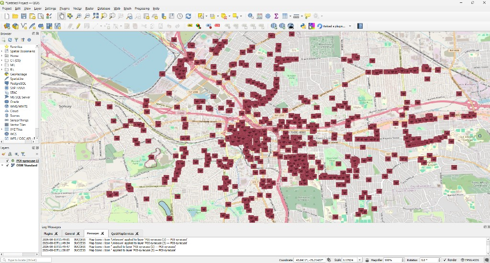

Gallery of Possibilities
A feminist map icon gallery and QGIS plugin.

Gallery of Possibilities
The galleryofpossibilities is a feminist mapping tool and an alternative map icon library, grounded in feminist thought and practice that can be integrated into QGIS, an open-source mapping platform, and cartography, more broadly.
Loading icons…
Icon details
Metadata
Icon Format
About the galleryofpossibilities
-
Configuration
Map icons and metadata are stored on Zenodo, an open-source repository.
-
Download and Install
Plug-in can be installed directly through QGIS or manually with zip files available on GitHub.
-
File Formats
Map icons are served as PNG images and digitized SVGs.
-
Search and Apply
Filter by tags, place names, designers, and organizations and apply to map.
-
Style and Symbolize
Customize by adding color and stroke to SVGs and backgrounds for added contrast.
-
Favorites
Curate and save a custom subset of map icons for a particular use case.
Contribute
Contribute feminist map icons to the gallery.